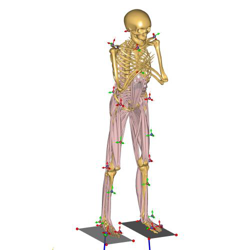
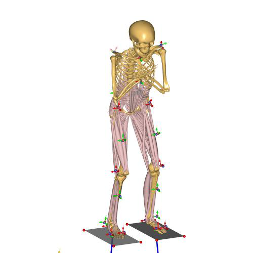

Multi trial MoCap model¶
Example of a MoCap model structured for analyzing data from multiple subjects and trials. This special structure makes it much easier to work with large datasets with multiple subjects and trials. Hence, this model is the best starting point for analyzing bigger MoCap experiments.
This example shows the AnyMoCap framework applied to a set of squatting trials. The subject specific scaling and marker optimization is done on a standing reference recording, and the values are then applied to a squatting trial.
The data is provided by Maria Jönsson from KTH (Royal Institute of Technology School of Technology and Health) in Sweden.
The files are structured so each trial has its own folder with a main file
(Main.any) and a file with trial specific data (TrialSpecificData.any).
The C3D files are placed together in a separate folder.
The model is structured as outlined below:
Application/MocapExamples/Plug-in-gait_MultiTrial_StandingRef
│ libdef.any
│ C3DSettings.any
│ BodyModelConfig.any
│ ExtraDrivers.any
│ ForcePlates.any
│ MarkerProtocol.any
│ LabSpecificData.any
│
├───c3d_files\
| S1_FlywheelSquat.c3d
| S1_StandingRef.c3d
| S2_FlywheelSquat.c3d
| S2_StandingRef.c3d
│
├───Output\
│
└───Subjects\
│
├───S1\
│ | SubjectSpecificData.any
| |
│ ├───S1_FlywheelSquat\
| | Main.any
| | TrialSpecificData.any
| |
│ └───S1_StandingRef\
| Main.any
| TrialSpecificData.any
│
└───S2\
| SubjectSpecificData.any
|
├───S2_FlywheelSquat\
| Main.any
| TrialSpecificData.any
|
└───S2_StandingRef\
Main.any
TrialSpecificData.any
- 
- 